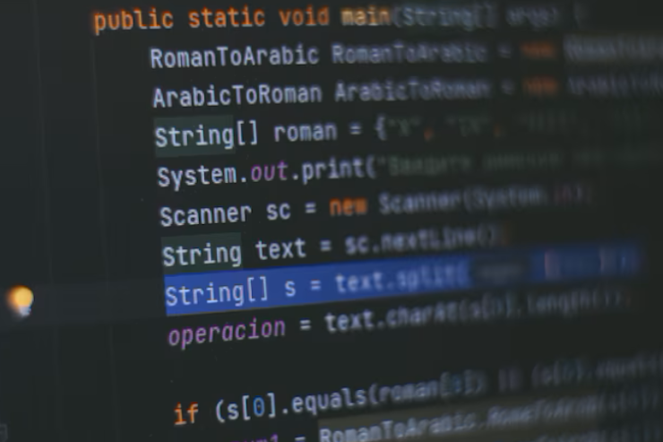
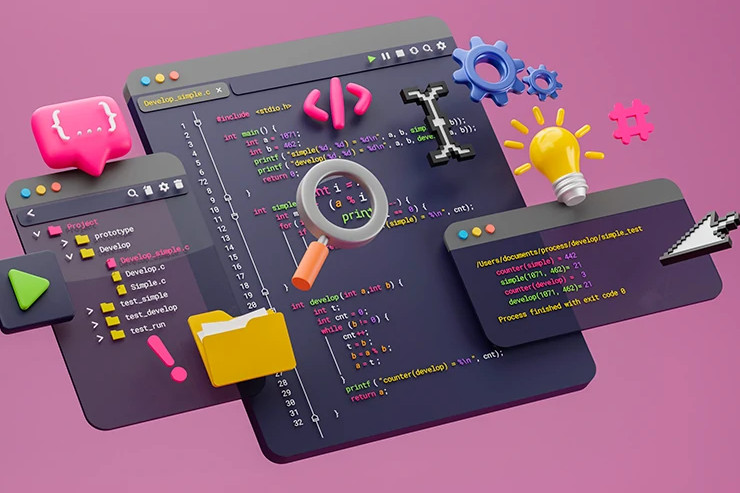
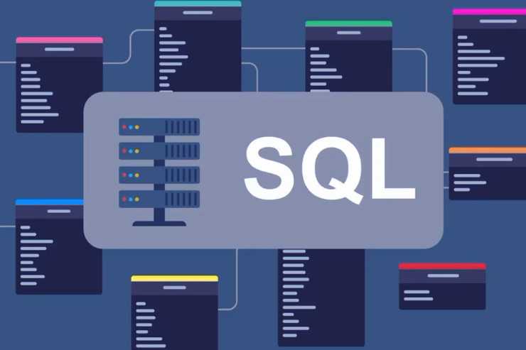

CURSO 2025/2026 -- DAW 2 -- I.E.S. LOS SAUCES
Gonzalo Junquera Lorenzo
GRADO SUPERIOR DESARROLLO DE APLICACIONES WEB
Curso 2º
DWES Desarrollo web en entorno servidor
CIB Fundamentos de ciberseguridad
DAW Despliegue de aplicaciones web
DIGI Digitalización aplicada al sist. prod.
DIW Diseño de interfaces web
DWEC Desarrollo web en entorno cliente
IPE2 Itinerario par la empleabilidad 2
SOST Sostenibilidad aplicada al sist. prod.
Curso 1º
IPEI

PROG

LMSGI

BBDD
SINF
ING
EDD
OPT